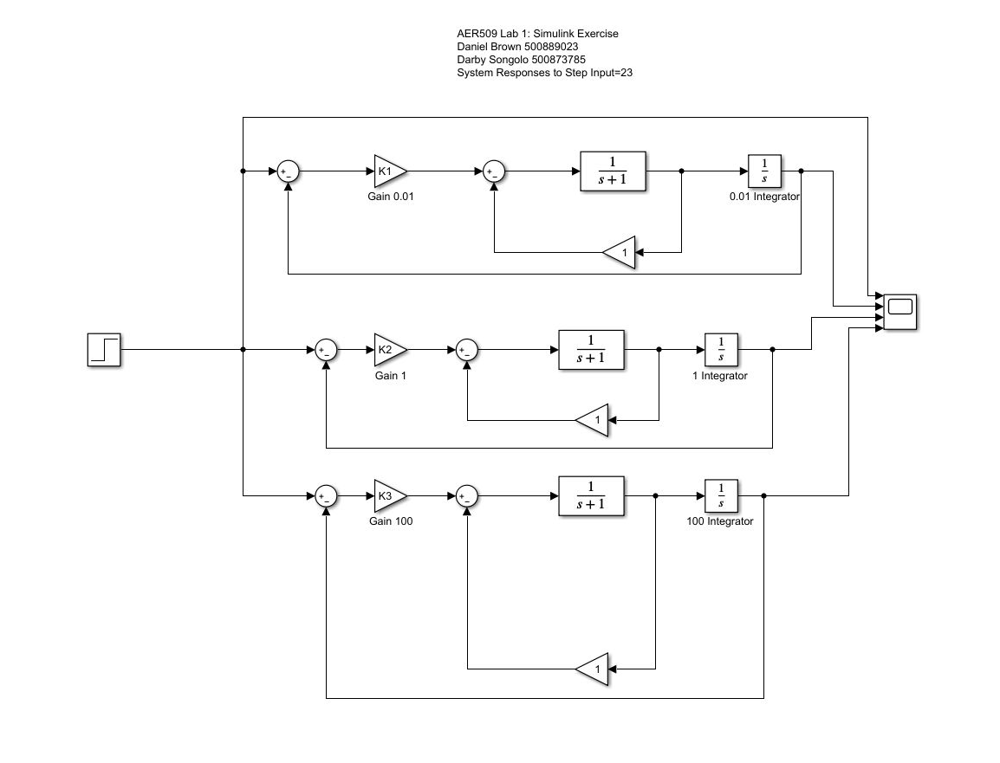

AER 509 Control Systems Lab 1 - "Introduction to Matlab and Simulink" Darby Songolo - 500873785 Daniel Brown - 500889023
Contents
Introduction
The purpose of this lab was to gain familiatiry with several key capabilities of MATLAB and Simulink. Within MATLAB, exercises were completed to pratice matrix manipulation, plotting of functions, symoblic operations, solving ODEs, and creating and utilizing functions. Within Simulink, a rudimentary integration feedback loop consisting of 3 control systems was created, to explore the effect of gain amplifiers on solution convergence.
Matlab Excercise - Part 1
A = pandigital() i = A' ii = det(A) iii = inv(A) iv = eig(A)
A =
1 9 8
3 5 7
4 6 2
i =
1 3 4
9 5 6
8 7 2
ii =
150
iii =
-0.2133 0.2000 0.1533
0.1467 -0.2000 0.1133
-0.0133 0.2000 -0.1467
iv =
14.5044
-3.7369
-2.7674
Matlab Excercise - Part 2
t = 0:0.25:8; y = cos(t)+sin(t); maxy = max(y); y = y./maxy; plot(t,y); snapnow;
Matlab Excercise - Part 3
syms s
eig_eqn = det(s*eye(3)-A)
vpa(solve(eig_eqn))
eig_eqn = s^3 - 8*s^2 - 84*s - 150 ans = -2.7674335980738590864795841590453 -3.7369327977787240405123853299374 14.504366395852583126991969488983
Matlab Excercise - Part 4
syms s t X x(t) ode = diff(x,t,2) + 4*diff(x,t) + 5*x == cosh(2*t); %x(0) = 1, x'(0) = 4 L = laplace(ode,t,s) lap_eqn = subs(L,[laplace(x(t),t,s) x(0) subs(diff(x(t),t),t,0)], [X 1 4]) Xs = solve(lap_eqn,X) xt = ilaplace(Xs) pretty(xt) diff(xt,2) + 4*diff(xt,1) + 5*xt t = 0; x_0 = eval(xt) Dx_0 = eval(diff(xt))
L =
4*s*laplace(x(t), t, s) - 4*x(0) - s*x(0) + s^2*laplace(x(t), t, s) - subs(diff(x(t), t), t, 0) + 5*laplace(x(t), t, s) == s/(s^2 - 4)
lap_eqn =
5*X - s + 4*X*s + X*s^2 - 8 == s/(s^2 - 4)
Xs =
(s + s/(s^2 - 4) + 8)/(s^2 + 4*s + 5)
xt =
exp(-2*t)/2 + exp(2*t)/34 + (8*exp(-2*t)*(cos(t) + (25*sin(t))/2))/17
/ 25 sin(t) \
exp(-2 t) | cos(t) + --------- | 8
exp(-2 t) exp(2 t) \ 2 /
--------- + -------- + ----------------------------------
2 34 17
ans =
exp(-2*t)/2 + exp(2*t)/2
x_0 =
1
Dx_0 =
4
Matlab Excercise - Part 5
% function [A,detA,invA,powA] = pandigital(power) % %pandigital % %creates an invertible pandigital 3x3 matrix % %each digit in the matrix is unique value [1,9] % %matrix is checked if it can be inverted % %P.Cresnik 2013 % %% Pandigital % if 0 > power || power > 10 % disp('Input Error: Out of Bounds - Default to Power = 2') % power = 2; % end % A = zeros(3,3); % u = zeros(1,9); % m = 1; % counter = 0; % invertible = 0; % % while(invertible ~= 1) % % while(m <= 9) % % nn = round(10*rand); % % if (nn == 0 || nn == 10) % continue; % elseif (m == 1) % u(m) = nn; % m = m + 1; % elseif (m > 1) % for k = 2:m % if nn == u(k-1) % counter = counter + 1; % end % end % % if counter ~= 0 % counter = 0; % continue; % else % u(m)=nn; % m = m + 1; % counter = 0; % end % end % end % % Form A % for kk = 1:3 % A(1,kk)=u(kk); % A(2,kk)=u(kk+3); % A(3,kk)=u(kk+6); % end % % if(rcond(A) < 0.001) % invertible = 0; % m = 1; % % else % invertible = 1; % % end % end % % detA = det(A); % invA = inv(A); % powA = A^power; % end [A,detA,invA,powA] = pandigitalDS(5)
A =
7 1 4
9 8 5
2 6 3
detA =
93
invA =
-0.0645 0.2258 -0.2903
-0.1828 0.1398 0.0108
0.4086 -0.4301 0.5054
powA =
197514 142353 127521
461091 331905 297741
268782 193272 173499
Simulink Excercise
K1 = 0.01; K2 = 1; K3 = 100; opengl hardware imshow('simulinkoutput1.jpg') % The values of GainK1, GainK2, and GainK3 show the relationship between % the input and output values of each feedback system. The gain value effectively determines how "strongly" % the system will respond to the changing value fed back into the summing junction. % With a low gain (K1), the system responds slowly to meet the desired final value. With a high gain (K3), % the system responds very quickly, however will repeatedly oscillate around the desired final value before converging.
Conclusion
Through this lab, a thorough understanding of some of the basics of Matlab and Simulink were developed. The succesful use of both in-built, and custom Matlab functions was shown, as well as the succesful generation and use of a simple Simulink model.